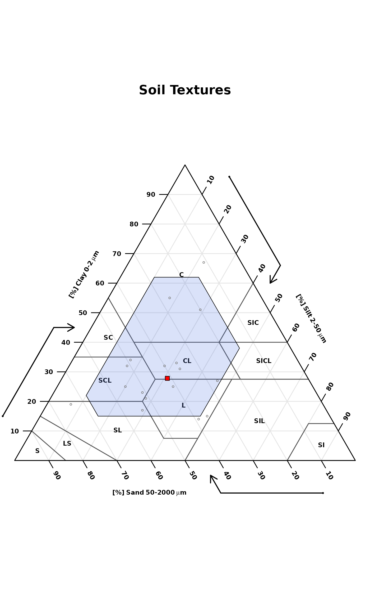
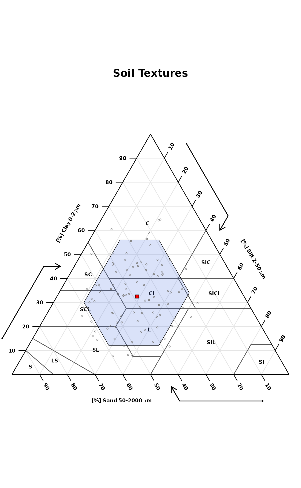

R/textureTriangleSummary.R
textureTriangleSummary.RdThis function accepts soil texture components (sand, silt, and clay percentages) and plots a soil texture triangle with a "representative value" (point) and low-high region (polygon) defined by quantiles (estimated with Hmisc::hdquantile). Marginal quantiles of sand, silt, and clay are used to define the boundary of a low-high region. The default settings place the RV symbol at the texture defined by marginal medians of sand, silt, and clay. The default low-high region is defined by the 5th and 95th marginal percentiles of sand, silt, and clay.
textureTriangleSummary(
ssc,
p = c(0.05, 0.5, 0.95),
delta = 1,
rv.col = "red",
range.border = "black",
range.col = "RoyalBlue",
range.alpha = 80,
range.lty = 1,
range.lwd = 2,
main = "Soil Textures",
legend.cex = 0.75,
legend = TRUE,
...
)data.frame with columns: 'SAND', 'SILT', 'CLAY', values are percentages that should add to 100. No NA allowed.
vector of percentiles (length = 3) defining 'low', 'representative value', and 'high'
grid size used to form low-high region
color used for representative value (RV) symbol
color used for polygon border enclosing the low-high region
color used for polygon enclosing the low-high region
transparency of the low-high range polygon (0-255)
line style for polygon enclosing the low-high region
line weight polygon enclosing the low-high region
plot title
scaling factor for legend
logical, enable/disable automatic legend
further arguments passed to soiltexture::TT.points
an invisible matrix with marginal percentiles of sand, silt, and clay
# \donttest{
if(
requireNamespace("Hmisc") &
requireNamespace("compositions") &
requireNamespace("soiltexture")
) {
# sample data
data('sp4')
# subset rows / columns
ssc <- sp4[grep('^Bt', sp4$name), c('sand', 'silt', 'clay')]
names(ssc) <- toupper(names(ssc))
# make figure, marginal percentiles are silently returned
stats <- textureTriangleSummary(
ssc, pch = 1, cex = 0.5,
range.alpha = 50,
range.lwd = 1,
col = grey(0.5),
legend = FALSE
)
# check
stats
# simulate some data and try again
s <- bootstrapSoilTexture(ssc, n = 100)$samples
# make the figure, ignore results
textureTriangleSummary(
s, pch = 1, cex = 0.5,
range.alpha = 50,
range.lwd = 1,
col = grey(0.5),
legend = FALSE
)
}


# }